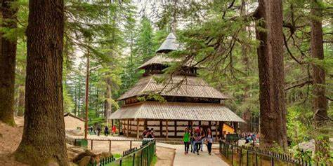

Images

Description
The Hadimba Temple is one of the most sought-after tourist attractions of the quaint hill town of Manali in Himachal Pradesh. It is situated amidst beautiful hills and surrounded by striking cedar trees. The temple is locally known as Dhungri Temple since it lies in the Dhungri forest area of Manali. This ancient Hindu place of worship was built in the 16th century by Raja Bahadur Singh. The main deity worshiped at this shrine is demon Goddess Hadimba. The temple is also referred to as Hidimba Devi Temple.